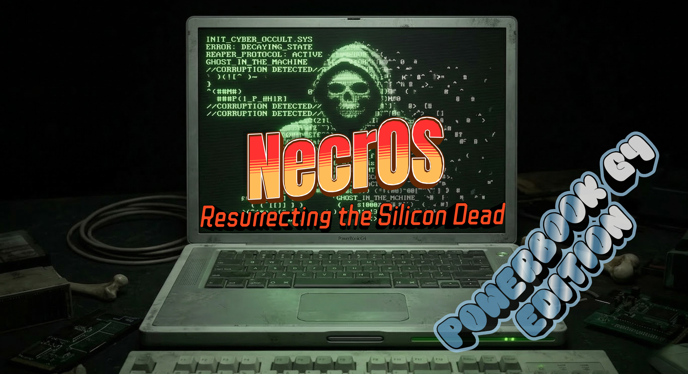

PowerPC-first
Le port n’essaie plus de maquiller un flux x86. Il assume un chemin PowerPC distinct, avec détection `ppc`, build dédié et documentation orientée PowerBook G4.
necros-g4 reprend l’ADN terminal-first de NecrOS, mais l’habille pour le monde PowerBook G4: machine de terrain, coque aluminium, écran froid, clavier noir et ligne de commande verte à l’intérieur.

La page d’origine jouait la carte CRT sombre. Ici on garde l’ADN hostile et minimal, mais on le projette dans une esthétique PowerBook G4: métal froid, éclats Aqua, cockpit portable et terminal opérationnel.
Le port n’essaie plus de maquiller un flux x86. Il assume un chemin PowerPC distinct, avec détection `ppc`, build dédié et documentation orientée PowerBook G4.
L’idée n’est pas une distro de labo lourde, mais un poste léger, utilisable sur ancien matériel, pensé pour l’intervention et la discrétion.
On reprend les codes visuels du G4 sans tomber dans la nostalgie kitsch: reflets aluminium, rondeurs Aqua, contraste froid, typographie propre et terminal lisible.
Le projet vise une machine réelle avec contraintes réelles: RAM limitée, CPU PowerPC 32-bit, support graphique imparfait, mais un clavier et un form factor encore très exploitables.
Le flux le plus crédible aujourd’hui n’est pas un ISO PPC magique, mais un bundle généré côté build puis installé localement sur la machine cible.
Le port doit rester incrémental: d’abord le runtime, ensuite les toolboxes, enfin le boot media Open Firmware.
Installer une base PPC compatible, idéalement Adélie Linux.
Déployer necros-g4 en mode CLI et valider réseau, shell, outils core.
Tester GUI et packages toolbox par toolbox, pas en bloc.
Traiter ensuite les cas big-endian et le vrai média de boot.
Le dépôt NecrOS-G4 contient déjà le socle de portage: détection PowerPC, support Alpine/Adélie côté runtime, bundle `build-ppc`, documentation G4, et identité de projet séparée.